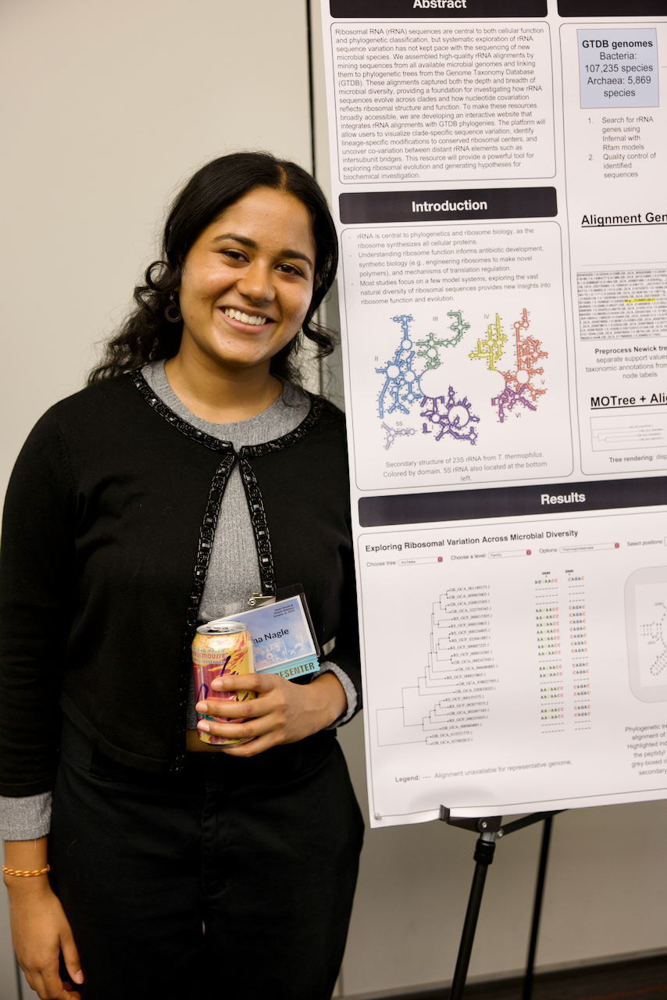

Computational RNA researcher focused on sequence–function modeling, structure prediction, and ML-driven RNA design; bridging genetics, biophysics, and evolution.

I'm a fourth-year at UC Berkeley pursuing a dual degree in Molecular & Cellular Biology and Data Science, with a domain emphasis in Biochemistry, Biophysics, and Structural Biology.
My work centers on computational RNA biology, specifically the application of machine learning to RNA sequence–function prediction and design. I'm interested in how we can use deep learning, interpretable models, and evolutionary sequence data to understand and engineer RNA molecules with precision.
Across projects spanning RNA secondary structure prediction, tRNA charging specificity, combinatorial mutagenesis, and ribosomal phylogenetic alignments, I've built an interdisciplinary toolbox at the intersection of genetics, biophysics, and evolution. I currently work in the Cate Lab at the Innovative Genomics Institute and spent summer 2025 at Cold Spring Harbor Laboratory in the Koo Lab.
Selected as 1 of 17 students in the 2025 URP cohort. Developed a machine-guided framework for combinatorial mutagenesis to study RNA sequence–function relationships, integrating ResidualBind and surrogate modeling for interpretability.
Trained, fine-tuned, and evaluated RNA secondary structure prediction models on a large database compiled from Rfam via Infernal. Implemented tokenization, hyperparameter optimization, and testing pipelines on the Lawrencium GPU cluster.
Developing interpretable ML methods to study tRNA identity elements and charging specificity using evolutionary sequence data. Applying RNA-FM embeddings, softmax classifiers, and HPC pipelines to identify class-specific features.
Built an interactive web app for visualizing rRNA phylogenies, integrating a custom Perl module (MOTree) with a Flask frontend. Implemented backend pipelines to parse Newick files and generate scalable SVG trees.
Collaborated directly with Prof. Cate on a bioinformatics-based exploration of YbeY, a nearly universal enzyme that forms iso-aspartate in ribosomal subunit protein backbone. Analyzed gene neighborhoods and visualized structures in ChimeraX and Coot.
Created an algorithm to scan and extract synthetase and monomer names from scientific literature and populate the C-GEM database. Developed a chemical formula–to–SMILES converter and locally deployed a user interface.
Outside of research, I spent my first two years of undergrad on the Cal Mock Trial team, which sharpened how I think about constructing and communicating arguments. On the weekends, I also volunteer at a local soup kitchen, play pickleball with friends, hike around the Bay Area, and train for my first marathon.
I'm always happy to connect about research, collaborations, or opportunities in computational biology and ML.
Send an Email